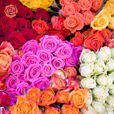
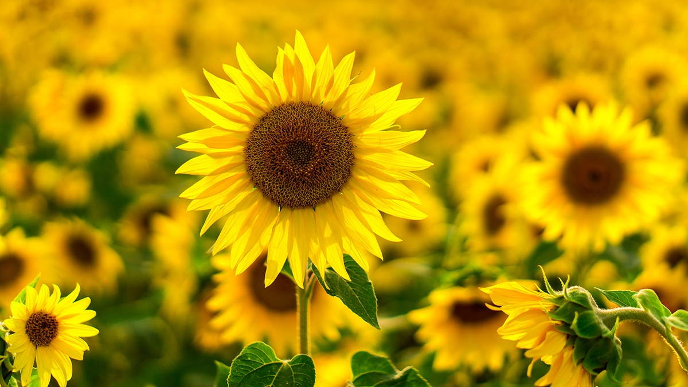
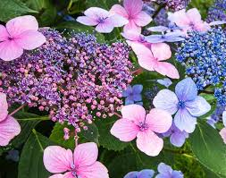
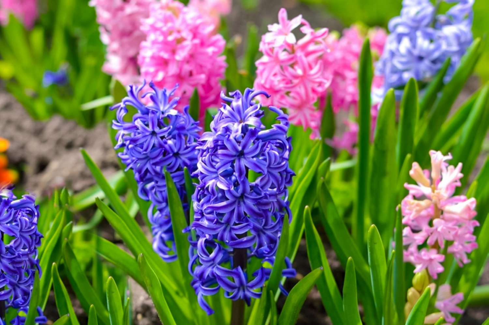
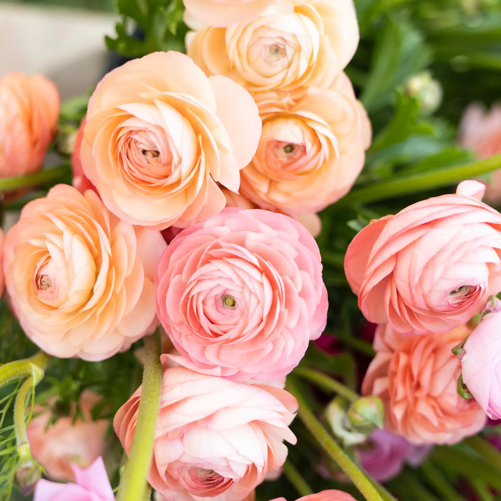
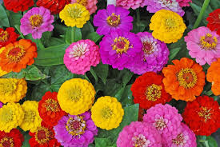
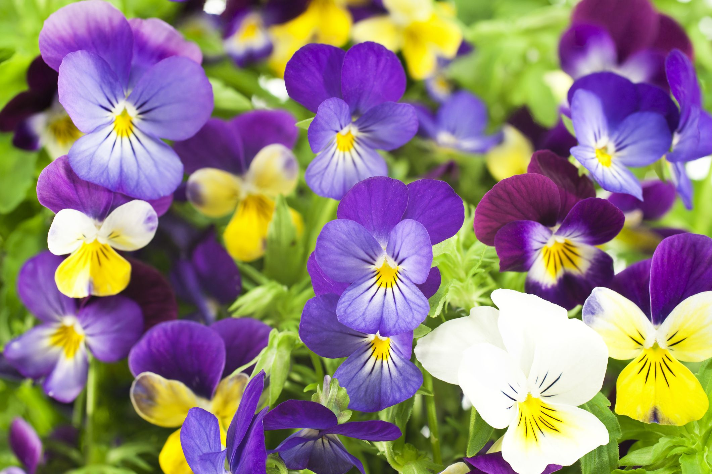
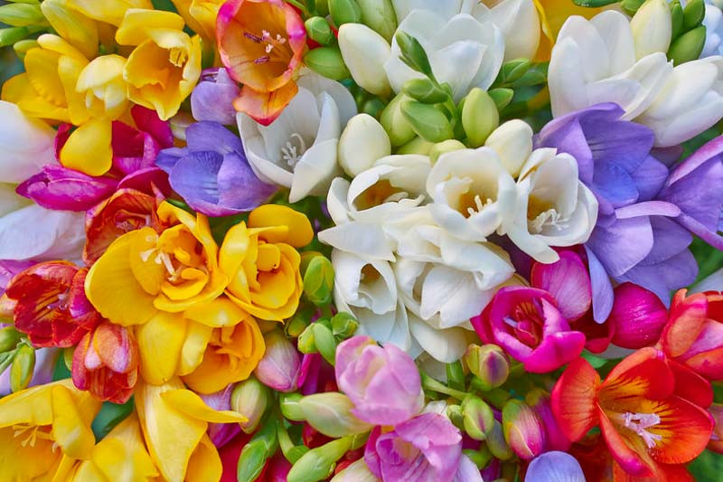

Rose
Like the flower itself, the history of the rose is very colorful. Roses have been naturally growing for over 35 million years! However, they were not known to be cultivated until about 5,000 years ago. Their usage began not just as a decorative touch to one’s home, but they were also used for medicinal purposes and to make perfumes, and their petals were even used as confetti for festive occasions. Getting your roses into water quickly is the first step in caring for them. Fill a vase three-fourths full of fresh, cool tap water. The roses will absorb the water, soaking up the nutrients that will travel up to the bloom and create a lively flower. Check the water level in your rose’s vase every day and add more water as needed.
Sunflower
Genus of nearly 70 species of herbaceous plants of the aster family (Asteraceae). Sunflowers are native primarily to North and South America, and some species are cultivated as ornamentals for their spectacular size and flower heads and for their edible seeds. The Jerusalem artichoke (Helianthus tuberosus) is cultivated for its edible underground tubers.
Hydrangea
Showy hydrangea bushes begin gracing gardens across the country. This perennial, a native of East Asia and the Americas, comprises more than 75 species and 600 cultivated varieties, of which mophead, lacecap, oakleaf, and peegee are the most common. Some hydrangea flowers can turn a pretty pink or blue depending on the acidity or alkalinity of the soil, while others will remain white. Mopheads, lacecaps, and oakleafs bloom on the previous year's wood and can be pruned in the summer after flowering; peegees bloom on this year's wood and can be pruned in the late winter, before the new spring growth.
Hyacinth
Hyacinths, with their powerfully sweet scent, are popular spring bulbs native to eastern Mediterranean countries, including Turkey, Syria, and Lebanon. Today, about 60 cultivars exist, with white, pink, red, purple, or blue flowers that grow in a tight column along short stems. Hyacinths can easily be grown outside in the garden or in containers, or indoors in pots. After planting, can take upwards of three months for them to establish a root system, but once established and blooming, they will reward you with pretty colors and a sweet scent.
Ranunculus
Ranunculus flowers are varieties of the big, showy, Persian buttercups that grow from claw-shaped corms and come in a variety of bright colors. Their layers of paper-thin, glossy petals give the blossoms a rose-like appearance that is appealing for wedding bouquets or long-lasting cut flowers. Ranunculus are not commonly grown in home gardens, but they could be. Southern gardeners can plant the corms in the fall for spring blooms, and northern gardeners can plant in the early spring for summer blossoms.
Zinnia
Colorful, easy-to-grow zinnias are a beginner gardener’s dream. They can be seeded from the last frost to early summer and will consistently produce blooms all season if dying blooms are deadheaded — truly a “cut and come again” flower. They are herbaceous annuals, native to Mexico, South America, and the southwestern U.S. that are of varying heights, with bright flowers that measure 1 to 7 inches in diameter and are single, semi-double, or double. Zinnias are perfect for a butterfly garden, with their red, pink, purple, yellow, white, or orange blossoms that attract pollinators of all kinds, including hummingbirds.
Pansy
Cheerful little pansies are native to Europe and Asia, and are some of the most popular garden plants grown. They come in blue, purple, white, yellow, and bi-color, and most varieties grow in bunches, close to the ground. Pansies are cool-weather plants and are only perennial in mild climates that have cold winters and summers that are not too hot. In warmer climates, they can only be grown as annuals during the spring and fall.
Yarrow

Yarrow is a perennial in the aster family that is native to Europe, Asia, and North America. Its flat clusters of small flowers come in white, pink, red, purple, yellow, or orange. Starting in the spring with seeds or from small nursery plants, it will bloom in the summer, and, if deadheaded, again in the fall. Yarrow does well in containers and is good as a cut flower for fresh or dried arrangements. It is attractive to pollinators but toxic to dogs, cats, and horses.
Freesia
Freesias are delightful members of the iris family that are native to South Africa. They feature five to seven fragrant, upward-pointing flowers that bloom sequentially in a line on slender, arching stalks. The flowers come in a rainbow of colors: pink, red, purple, blue, yellow, orange, and white. Freesias will flower 10 to 12 weeks after planting and stay fresh for six weeks or more, making them excellent cut flowers for arrangements or wedding bouquets.